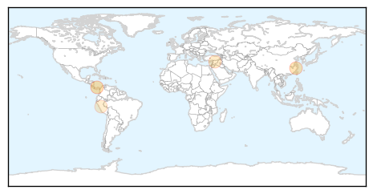

Meningitis
30-Day Web Trend
1 alerts, 0 warnings

30-Day Twitter Trend
0 alerts, 0 warnings

Article Locations

Article Confidences

Top Articles:
- 0.823
- NHRC asks for report on AES
- 0.732
- U.S. Teens Still Lag In Getting Vaccinated Against HPV
- 0.729
- U.S. Teens Still Lag In Getting Vaccinated Against HPV
- 0.729
- U.S. Teens Still Lag In Getting Vaccinated Against HPV
- 0.729
- U.S. Teens Still Lag In Getting Vaccinated Against HPV
- 0.729
- U.S. Teens Still Lag In Getting Vaccinated Against HPV
- 0.648
- U.S. Teens Still Lag In Getting Vaccinated Against HPV : Shots
Top Tweets:
-
No tweets found for Jul 24, 2014
Influenza
30-Day Web Trend
4 alerts, 0 warnings

30-Day Twitter Trend
0 alerts, 0 warnings

Article Locations
Article Confidences

Top Articles:
- 0.966
- Notification of a Single Source Cooperative Agreement Award for the Gorgas Memorial Institute
- 0.846
- Taiwan lifts travel alert for Guangdong Province
- 0.649
- How Syria's Chemical Weapons Are Being Destroyed
- 0.625
- Head of troubled CDC anthrax lab resigns
- 0.579
- 'Uncontacted' Amazon people treated for flu
Top Tweets:
-
No tweets found for Jul 24, 2014